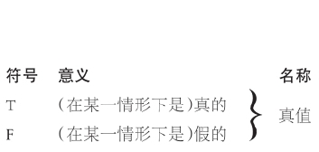
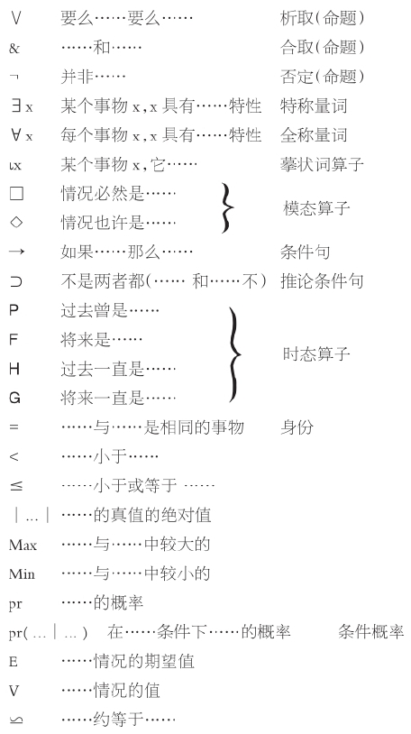

以下术语表包含了本书中所使用的专业术语以及逻辑符号。我们不打算为各个词条提供精确的定义，而是希望表达出主要意思，供快速参考。尽管还存在其他几组常用的符号，但总体来说，这里使用的术语和符号也都是相当标准的。
前件 ：在条件句中，“如果”后面的那一部分句子内容。
结论 ：在推理中，为推理叙述原因的那一部分。
条件句 ：如果……那么……
条件概率 ：在其他某种信息存在的情况下，某个陈述的概率。
合取命题 ：……和……
合取项 ：一个合取命题中的两个句子。
后件 ：在条件句中，“那么”以后的那一部分句子内容。
会话含义 ：不是根据所说的内容而是根据说话的事实进行的推理。
决策论 ：在信息不确定的情况下如何做好决策的理论。
演绎效度 ：如果一个推理的前提为真，结论肯定也为真时那么该推理就具有演绎效度。
（限定）摹状词 ：一种具有“如此如此特性之物”形式的名称。
析取命题 ：要么……要么……
析取项 ：一个析取命题中的两个句子。
期望值 ：把每一种可能的结果都考虑在内，并用每个可能结果的值乘以它的概率，然后再相加，最后得出的结果。
模糊逻辑学 ：逻辑学的一个分支，其所研究的句子都采用0到1之间的任何数字为其真值。
归纳效度 ：如果一个推理的前提为其结论提供了某种合理的理由，尽管未必是一个确实的理由，那么这个推理就具有归纳效度。
推理 ：把前提作为结论的理由而陈述的一种推断。
逆概率 ：在条件b下a的条件概率与在条件a下b的条件概率之间的关系。
表示身份的“是” ：……与……是相同的对象（事物）。
表示述谓的“是” ：谓语的一部分，表明对谓语其他部分所表现出的特性的应用。
莱布尼茨定律 ：如果两个事物完全一样，那么一个事物的任何一个特性也是另一个事物的一个特性。
骗子悖论 ：“这个句子是假的”。
推论条件句 ：不是两者都（……和……不……）。
模态算子 ：附加到一个句子上以构成另一个句子的短语，表示第一个句子为真或为假（可能、必然等）。
现代逻辑学 ：19和20世纪之交，由逻辑学革命而产生的逻辑学理论和方法。
假言推理 ：由前件到后件的推理形式：a →c/c。
名称 ：指代一个事物（完整无缺）的一个单词的语法范畴。
必然性 ：情况必然是……
否定 ：情况不是……
特称量词 ：某物是……的。
可能性 ：情况也许是……
可能世界 ：与另一个s情形相关的情形，在s情形下仅仅是可能的事情在此情形下却确实如此。
谓语 ：就语法上最简单的句子而言，谓语指的是对句子主题进行表述的那一部分内容。
前提 ：推理中，阐述原因的那个部分。
中立法则 ：如果有许多可能性，且它们之间没有显著差异那么它们都具有相同的概率。
先验概率 ：在考虑任何证据之前某个陈述的概率。
概率 ：测算某事物可能性大小的一个数字，在0至1之间。
专有名称 ：一个非摹状词的名称。
量词 ：可能是一个句子的主语但却不指代事物的一个单词或短语。
基准组类 ：用来计算概率比的那组对象（事物）。
罗素悖论 ：涉及所有不是自身成员的集合的集合。
自我指代 ：一个句子——它所谈的情形就是对句子本身的证明。
情形 ：（也许是假想的）一种事物状态，前提和结论在此状态下也许是正确的，也许是错误的。
连锁推理悖论 ：一种反复应用模糊谓语的悖论。
主语 ：就语法上最简单的句子而言，主语指的是表达句子是关于什么的那个部分。
三段论 ：一种有两个前提、一个结论的推理形式，由亚里士多德首创。
时态 ：过去、现在或者未来。
时态算子 ：附加到一个句子上以构成另一个句子的短语，表示第一个句子（在过去或未来）是正确或者错误的。
传统逻辑学 ：指在20世纪之前所使用的逻辑学理论和方法。
真值条件 ：那些阐述一个命题的真值是如何依赖命题组成部分的真值的命题。
真值函数 ：一种逻辑符号，将它与几个命题结合可构成更为复杂的命题，所构成的复合命题的真值完全取决于其成员命题的真值。
真值表 ：一个描述真值条件的图表。
真值 ：真（T）或假（F）。
全称量词 ：每个事物都具有……特性。
模糊性 ：谓语的一种特性，它表明一个事物若发生微小的变化对谓语的适用性不会产生影响。
有效 ：用于指一个推理的前提确实为其结论提供了某种理由。

